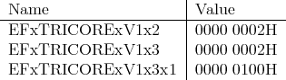

The TriCore uses the following e-flags to identify the TriCore/PCP derivatives:

TriCore supports programming of the PCP co-processor as follows:
- The TriCore assembler understands both TriCore and PCP instructions; while
TriCore is the default mode, you can easily switch to the PCP mode by using the
pseudo-opcodes
- .pcptext or .pcptext.some_section_name
- .pcpdata or .pcpdata.some_section_name
you can return to TriCore mode by entering any other section whose name doesn’t start
with .pcptext or .pcpdata (e.g., .text, .data, .bss, etc.).
Note:
There is no assembler command line option to enter PCP mode, so
you have to explicitly use the ext,data.pcpt pseudo-opcodes.
- The TriCore linker provides the default output sections .pcptext and .pcpdata which
will be filled with any PCP text and data sections found in the input objects
of the current link run; in addition, the start and target addresses, as well as
the sizes of these .pcptext and .pcpdata output sections, will be entered into
the __copy_table; in addition, the linker can be directed to automatically
translate data addresses between TriCore and PCP (as required by certain TriCore
MCUs)
- The TriCore startup code (crt0.o) automatically copies the .pcptext and .pcpdata
sections contained in a TriCore executable to the PCP’s code and data RAM areas, so
that all PCP code and data will be in place before the application’s main function is being
executed
- The TriCore debugger tricore-gdb and the tricore-objdump tool can disassemble
PCP code sections; they automatically switch to PCP mode whenever they are
requested to disassemble some code section whose name starts with .pcptext or
pcptext.
A TriCore application that uses the PCP would typically consist of some C/C++ code (called
by, or directly implemented in the program’s main() function) that initializes all relevant
hardware registers (’SFRs’), plus one or more assembler files (*.s or *.S) that implement the
PCP-specific code and data. Further information can be obtained from the following
documents:
- PCP Assembler Mnemonics Specification (Infineon)
- The TriCore Assembler Manual
- Smart Interrupt Service via PCP; Application Note AP32025 (Infineon)